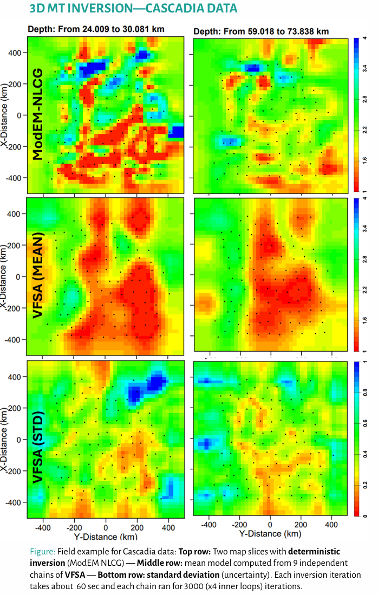

3D VFSA Inversion
Run a 3D magnetotelluric inversion using Very Fast Simulated Annealing (VFSA) with Gaussian-RBF parameterization, multi-chain ensemble sampling, and the external ModEM forward solver.

The 3D VFSA inversion requires ModEM (Mod3DMT / Mod3DMT_2025) compiled with MPI support and accessible on your PATH, along with an MPI runtime (OpenMPI, MPICH, or MS-MPI).
Running the example
julia --project=. examples/run_vfsa3dmt.jlThe script checks for the ModEM executable before starting. If it is not found it prints setup instructions and exits.
From Julia
using MTGeophysics
cfg = VFSA3DMTConfig(
nchains = 2,
nprocs = 21,
n_ctrl = 900,
log_bounds = (0.0, 5.0),
max_iter = 3000,
n_trials = 4,
seed = 1911,
keep_models = true,
)
best_model, iter_log = VFSA3DMT(
"examples/Cascadia/cascad_half_prior.ws";
dobs_path = "examples/Cascadia/cascad_errfl5.dat",
cfg = cfg,
)Configuration
| Parameter | Default | Description |
|---|---|---|
nchains | 1 | Independent Markov chains |
nprocs | 21 | MPI processes for ModEM forward calls |
mpirun_cmd | "mpirun" | MPI launcher command |
modem_exe | "Mod3DMT_2025" | ModEM executable name |
n_ctrl | 900 | Gaussian-RBF control points in the core |
log_bounds | (0, 5) | log₁₀(Ω·m) search bounds |
step_scale | 0.05 | VFSA proposal step size |
max_iter | 3000 | Iterations per chain |
n_trials | 4 | Trial perturbations per iteration |
T0_prop | 1.0 | Initial proposal temperature |
Tf_prop | 1e-3 | Final proposal temperature |
T0_acc | 1.0 | Initial acceptance temperature |
Tf_acc | 1e-3 | Final acceptance temperature |
seed | 1911 | Random seed for reproducibility |
pad_tol | 0.2 | Tolerance for core/padding detection |
padding_decay_length | 10.0 | Horizontal padding blend (cell widths) |
keep_models | true | Keep all trial model files |
keep_dpred | false | Keep predicted data files |
sigma_scale | 2.0 | RBF width scaling factor |
trunc_sigmas | 3.0 | RBF truncation distance (in σ) |
WS3D model format
The 3D VFSA engine uses the WS3D model format (Siripunvaraporn et al.), which stores resistivity in log₁₀(Ω·m). Conversion between WS3D and ModEM linear formats is handled automatically.
# Read / write WS3D models directly
m = load_ws3d_model("model.rho")
write_ws3d_model("output.rho", m.dx, m.dy, m.dz, m.A, m.origin)Ensemble analysis
When multiple chains are run, compute ensemble statistics over the collected best models:
mean_path, median_path, std_path = AnalyseEnsemble3D("runs/20260406_120000")This writes model.mean, model.median, and model.std in WS3D format.
The lower-level helper core_statistics(cores) computes element-wise mean, median, and standard deviation over an array of 3D resistivity cubes.
Output
The result directory contains:
runs/<timestamp>/
├── 0vfsa3DMT.log # per-iteration summary
├── 0vfsa3DMT_detailed.log # per-trial detail
├── best_model_chain01.rho # best model per chain
├── chain01_iter0001.rho # trial models (if keep_models=true)
├── ...
├── model.mean # ensemble mean (if nchains > 1)
├── model.median # ensemble median
└── model.std # ensemble stdExample data
The Cascadia 3D example is not bundled. Download it from ModEM-Examples and place it in examples/Cascadia/.